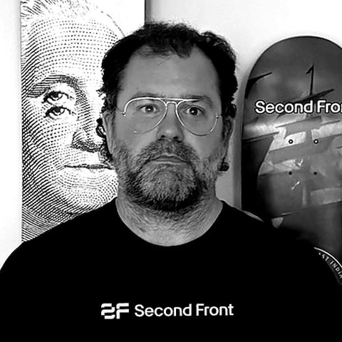
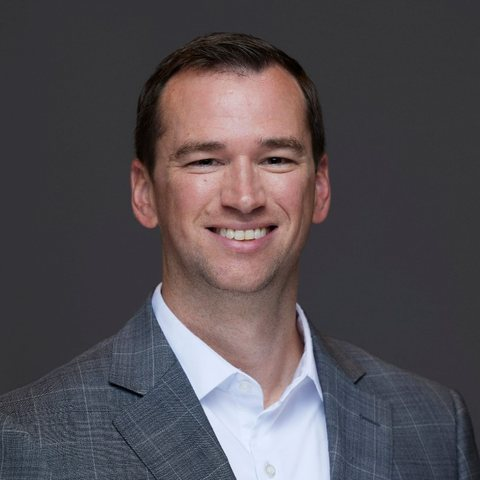

Continuous ATO. Continuous après.
Mornings on the mountain. Afternoons on the agenda. Nights you’ll talk about for a while.
How the week works.
Times and rooms are being finalized. We’ll post the hour-by-hour schedule closer to the event.
Advisory Day
For Customer Advisory Board and Club 7739 members. General attendees arrive Monday evening.
Keynotes on the mainstage
Breakouts + Jimmy Eat World
Hands-on workshops
Who’s on stage so far.
Practitioners, CISOs, assessors and federal leaders. More speakers are added every drop.


> We’d list everyone, but we’d run out of floppy disks. ;)
Companies you may meet at Paramijam.
Speakers, sponsors and partners joining us in Park City.


…with more being added every day
Keynotes, breakouts and panels.
Grouped by where you are today. Jump to your track, then open any topic for the full description.
Getting into federal
New to FedRAMP, or working toward your first authorization.
Getting Into FedRAMP 20x: Is the ROI Worth the Effort?Thinking about selling to the federal government but not sure where FedRAMP fits?+ MORE− LESS
Thinking about selling to the federal government but not sure where FedRAMP fits? You’ll learn how to tell if federal demand justifies the investment, which certification class to pursue first, what the assessment looks like from the assessor’s side, and how long it takes to build the evidence each class requires.
Practical Assurance: Real-World Lessons from Security AssessmentsWhat reviewers look at first, and what the fastest submissions did differently.+ MORE− LESS
Emu Crow, former Lead of Assessment at FedRAMP, has seen it all. That’s a view no single cloud provider gets: patterns across dozens of packages, the same mistakes repeated by different teams, and the submissions that moved through cleanly. This session covers what reviewers look at first, which evidence held up, the most common reasons packages stalled, and what the fastest submissions did differently.
All things FedRAMP
Rev5, CR26, 20x, VDR/VER and ConMon: staying authorized while the rules keep changing.
Rev5 Now: Your 18-Month RoadmapMeet CR26 now, plan the 20x move, and avoid paying for the same work twice.+ MORE− LESS
Legacy Rev5 certifications stay valid through 2028, and new Rev5 applications close this June. That leaves Rev5 certified orgs with a sequencing problem: meet CR26 now, plan the 20x move, and avoid paying for the same work twice. This session lays out the plan quarter by quarter.
VDR/VER: What Compliance Means Before March 7The VDR/VER grace period ends March 7. Chris Carpenter (Wiz) on what to fix in the weeks left.+ MORE− LESS
The VDR/VER grace period ends March 7, and certification is at risk for offerings that aren’t following the rules. Chris Carpenter breaks down what compliance requires in practice, the gaps showing up most since December 7, and what to fix in the weeks left.
ATO Management: Vulnerability & ConMonEarning an ATO is the start. Keeping it means finding, fixing, and reporting vulnerabilities.+ MORE− LESS
Earning an ATO is the start. Keeping it means finding, fixing, and reporting vulnerabilities under whichever rules apply to you: FedRAMP Rev5, 20x, CR26’s new VDR/VER requirements, or DoD RMF and IL. This session walks through how a cloud provider and its scanning partner manage that work across frameworks, from scanner finding to agency-ready report, with the workflow shown on screen.
Continuous ATO for Large OrganizationsKeeping many products continuously authorized while FedRAMP and DoD requirements keep moving.+ MORE− LESS
How do you keep many products continuously authorized while FedRAMP and DoD requirements keep moving? Leaders from Okta, Axon, Salesforce, and AWS share how evidence flows, who owns which piece, and what they’d change if they started over.
DoD & Impact Levels
Holding or pursuing a DoD IL authorization, or working under RMF.
Future of Risk Management in the DoDAre FedRAMP 20x and the DoD heading in the same direction?+ MORE− LESS
Are FedRAMP 20x and the DoD heading in the same direction? Experts who’ve worked in the Pentagon and at leading cloud service providers share what the future of DoD risk management looks like.
For every GRC team
GRC engineering, AI and the business case. Useful whatever framework you’re on.
Building a Culture of GRC Engineering: Navigating Immense Change (AI, Compliance Frameworks)Most GRC teams still run on spreadsheets. This panel is for the leaders changing that.+ MORE− LESS
GRC engineering started as compliance work done with code. Now AI can collect and validate evidence continuously, and FedRAMP requires machine-readable reporting. Attackers use the same tools, so point-in-time reviews can’t keep up. Yet most GRC teams still run on spreadsheets. This panel is for the leaders changing that: how to move a team off familiar tools, where to start, how to bring skeptics along, and which skills to hire and train for.
Using AI to Collect and Validate Evidence (2 Sessions)Raise your hand if you hate screenshots.+ MORE− LESS
Raise your hand if you hate screenshots. We all want AI to take over the tedious parts of compliance, but getting it to handle evidence collection is harder than it looks. GRC engineers who’ve done it across complex environments show how to use AI to pull evidence, check it against controls, and keep ConMon current as your program adds products and frameworks.
ROI on Great SecurityA clear line from security and compliance work to revenue.+ MORE− LESS
Leaders have to justify the security budget. Security engineers want to understand business outcomes of their great security work. Both need the same thing: a clear line from security and compliance work to revenue. Dean Sapp, Forrest McMahon, and Griffin Brown show how they measure it: deals unblocked, sales cycles shortened, and federal markets opened. Leaders leave with the case for their CFO. Attendees will leave able to show what their work is worth.
CCF Turns 10: The Framework Behind Modern GRCHow Adobe’s open source framework shaped modern GRC.+ MORE− LESS
How Adobe’s open source framework shaped modern GRC. Adobe built the Common Controls Framework so a control could be tested once and mapped to every certification, then released it publicly in 2017. The people who built it explain why it worked, how it shaped today’s multi-framework programs, and how the same approach applies when FedRAMP, CMMC, and DoD IL all land on one team.
More sessions and topics are on the way.
This is just the first wave. New keynotes, panels and breakouts are added as speakers confirm, so check back often.
Come to build. Leave with the work done.
Hands-on workshops, each with something real you take home. Included with Preferred, VIP and Black. A $150 add-on for General Admission.
SOC 2 to FedRAMP 20x Class A Submission
Leave with a Class A package ready to submit.
Bring your SOC 2, GovRAMP, or Rev5 documentation and work through it with Paramify and partner advisors over 3.5 hours. You leave with a Class A package ready to submit.
Automating Evidence Collection with AI
Leave with working fetchers and validators.
Get hands-on with open-source evidence collection. Paramify engineers help you build one to five automated evidence scripts for your own environment, and you leave with working fetchers and validators your team can run the next week.
Multi-Framework Gap Assessment & Implementation Roadmap
Leave with your top gaps and a 6-month roadmap.
One hour with advisors to see where your program stands against CR26, VDR/VER, 20x, RMF, or DoD IL, ranked by what you need and what deadline is first. You leave with your top gaps and a roadmap built for the next 6 months.
More workshops will be added as demand grows.
These are the first three. We’ll open more Thursday workshops as interest grows, so tell us what you want to build when you register.
Bring your burning questions.
Between the topics, the workshops and the people in the room, here’s what you’ll be able to answer by Thursday.
- 01How do large organizations actually run continuous ATO across dozens of products?
- 02How do I get into the federal market with FedRAMP 20x without a two-year, seven-figure project?
- 03I’m on Rev5. How do I meet CR26 and plan the move to 20x without paying for the same work twice?
- 04Where is DoD risk management going?
- 05How is the DoD looking at ConMon in comparison to FedRAMP 20x?
- 06How do I manage FedRAMP, DoD IL, and every other framework on my plate without duplicating work?
- 07How do I get my package through review the first time instead of getting sent back?
- 08The VDR/VER grace period ends March 7. Am I compliant, and how do I keep up when attackers move faster than my monthly scans?
- 09How do I build a GRC engineering culture and get my team off spreadsheets and screenshots?
- 10How do I use AI for evidence collection without creating new risk?
- 11How do I decide as leadership (or show leadership) what revenue security and compliance drive?